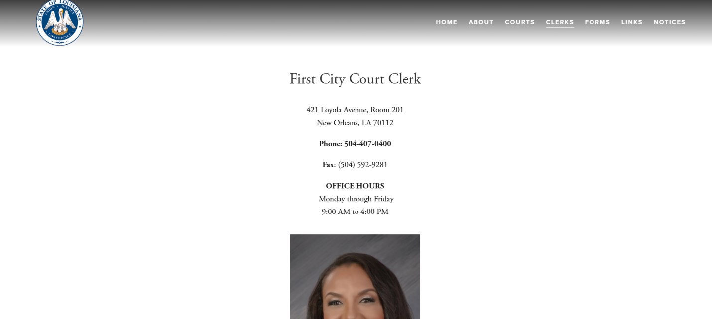
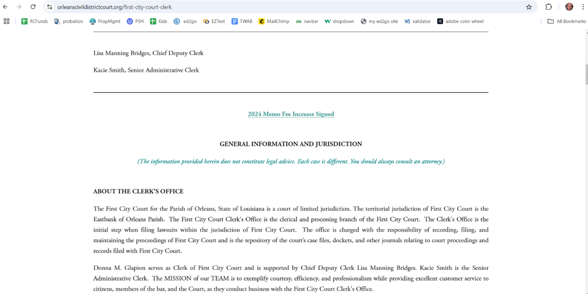
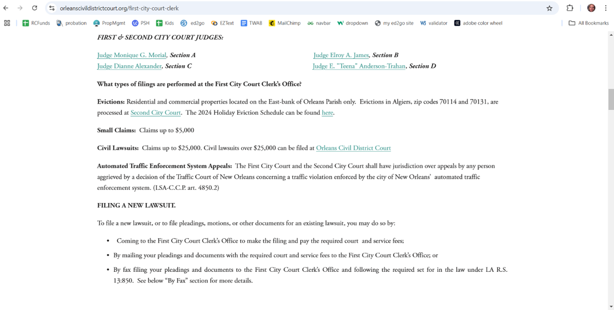
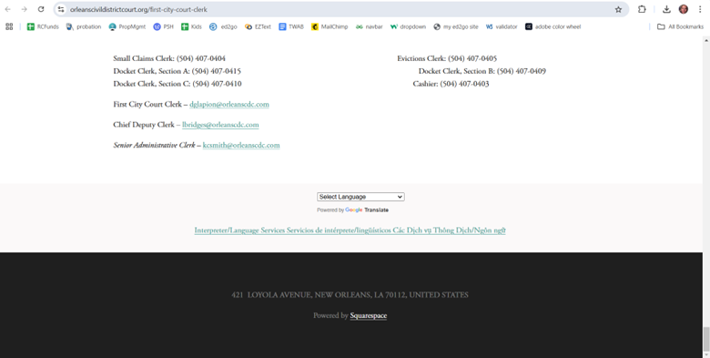
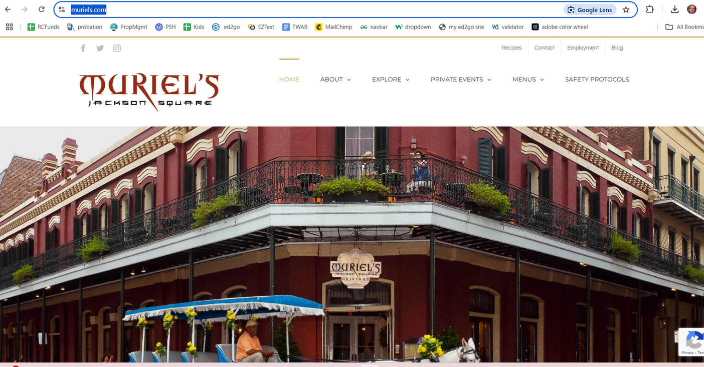
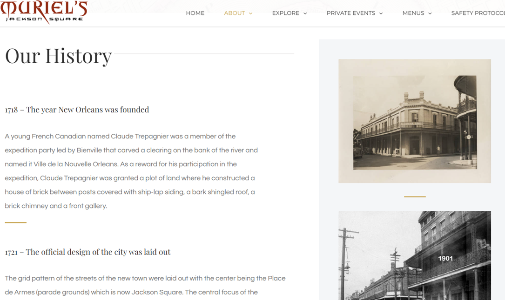
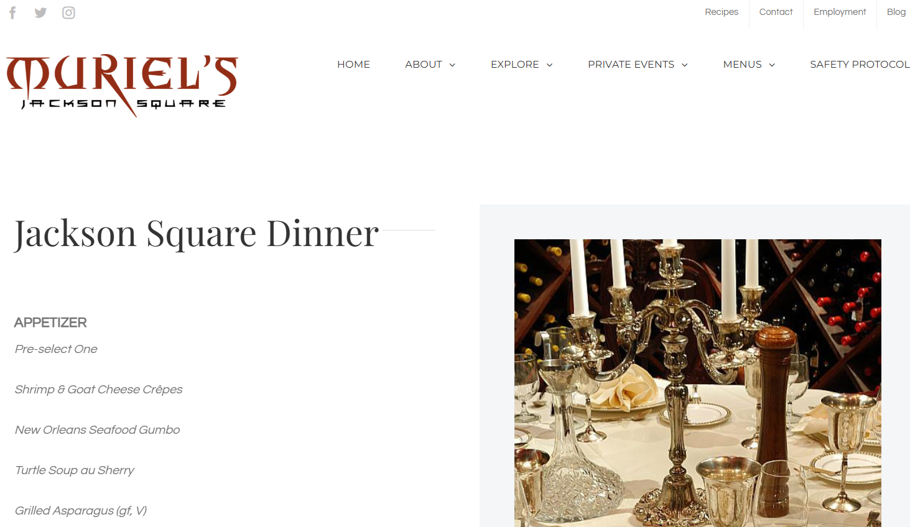

In this article, I will be demonstrating the importance of typography in web design by comparing two websites. One shows excellent use of typography (as well as other design elements), and the other is lacking in that area. The website with excellent typography is that for Muriel’s Restaurant in New Orleans. The website that could use a makeover is the New Orleans Small Claims court website. We will begin with the Small Claims website, which is located here.
The Small Claims website is lacking in many design elements, but for the purpose of this article, we will focus on its typography. When you first arrive at its site, you see the location, contact information and hours in what appears to be Times New Roman or some similar typeface, centered on the screen. The phone, the word “fax” and the title “OFFICE HOURS” are all in boldface, and I cannot fathom why. It seems quite arbitrary to me.
As you scroll down, you will see the page shown below. Again, the fonts appear to be without any coherent design in mind. It continues to be in Times New Roman, only now there are some items in blue. Sometimes those blue items are hyperlinks, as you would expect, and sometimes they are not. For example, “(The information provided herein does not constitute legal advice. Each case is different. You should always consult an attorney.)” is in blue but is NOT a hyperlink.
As you scroll down, you see more of the same.
Finally, you reach the footer, which only states the address of the court, again in Times New Roman. You might expect that a website devoted to legal matters would at least have a privacy policy listed in its footer, but that's not the case.
Now, let’s go to the landing page for Muriel’s Restaurant, which is located at www.muriels.com. You immediately see the eye-catching logo, and then your eye is drawn to the sophisticated sans serif font in the navigation bar. 
If you visit “About” – “Our History”, you are brought to the site shown below. Notice the size of the title of the webpage “Our History” in a classic Serif font, followed by other smaller serif headings, with the text of the paragraphs in easy-to-read Sans Serif.
This same typography theme is consistently shown throughout the website, with the title being in that large serif font, followed by the smaller headings and sans serif paragraph text. For example, under "Private Events - Jackson Square Dinner," you see the following page:
Notice the consistency and how the entire website gives you a sense that this is a classy, upscale restaurant with gourmet food. I could gush about other aspects of this website, but that is beyond the scope of this article. In any case, I will look to this site as an example of what I should aspire to be, as a web designer!